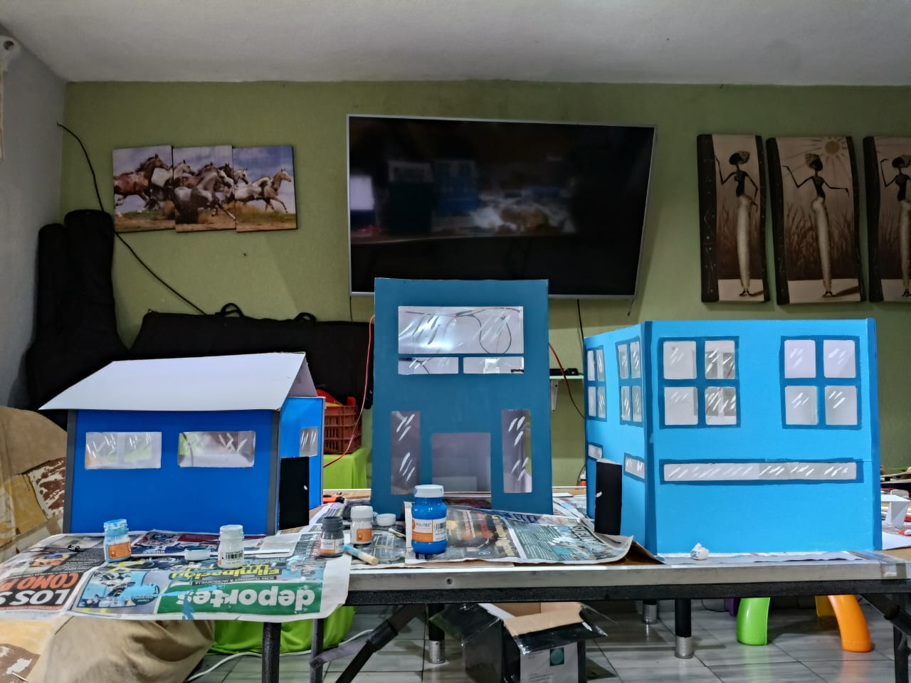
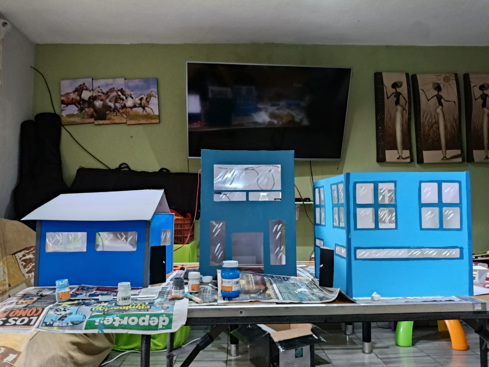

MAQUETA
PLANIFICACION DE LA MAQUETA
para empezar cual es nuestro proposito,
es hacer entender a los usuarios como es el funcionamiento de las redes, en este caso lo que les vamos a
explicar es como se hace el cambio de paquete de un edificio a otro. El saber el funcionamiento de
nuestras redes.
MATERIALES A OCUPAR
MATERIAL OCUPADO: Papel ilustración, Acetato, Cúter ,Silicón ,Cable ,Led ,Botón ,Adaptador ,Regla, Cartón, pintura, palillos, papel china.TOPOLOGIA DE RED
ELABORACION DE LOS EDIFICIOS.
Una vez definido que es lo que tenemos planeado a elaborar es tiempo de
mostrar el procedimiento de la elaboracion de los edificos que queremos
mostrarles a ustedes
Pero primero identifiquemos las medidas
Van hacer tres edificios los cuales cada uno tiene diferentes medidas de altura
pero para la base mediran lo mismo de 30 cm y la altura el la siguinete.
- EDIFICIO A: o el edificio de administracion tiene una altura de 40cm x 30cm
- EDIFICIO B: o el edificio de oficina tiene una altura de 30cm x 30cm
- EDIFICIO C: o el edificio de CASA tiene una altura de 20cm x 30cm
trazado y cortes de las paredes de los edificios
continuamos con nuestro papel Ilustración en el cual hicimos diferentes trazos según corresponda al edifico, una vez que tengamos todos los trazos pasamos a cortarlos con un cúter.
ya creados todos los edificos que vamos a ocupar para nuestra maqeuta pasaremos a colocarlos en forma de boceto para visualizar como se vera en un fututo
PINTADO DE EDIFIOS
, en la siguinete imagen se termino de pintar los edificiosy aparte se ralizo como se va haber con los techos ya listos
 

FUNCIONAMIENTO DE LA RED
en este apartado ya hablamos sobre los mecanismos implementados en nuestra maqueta como el circuito electrico o un sistema de poleas que refleje el funcionamiento de la red basada en la toplogia de arbol
CIRCUITO ELECTRICO
para empezar ocupamos una pila de 9v para poder conectar nuestros led hacia la maqueta en donde tenemos que soldar los componentes electricos para poder lograr una conectividad eficientecual es el proposito de esto es mostrar como fluye la energia a taraves de los dispoisitvos en este caso la pc y el router donde en especial es router tiene un boton el cual nos permitira interactiar cuando el paquete
SISTEMA DE POLEAS
para empezar que es una polea, una polea es una rueda que sirve para ejercer una fuerza giratoria sobre su propio eje, algo parecido con la tierrabueno a lo que voy es que con cartón hacemos un círculo con un radio de 3.5cm para las bases, pero para los círculos de adentro se ocupan por menos centímetros
como va a funcionar esto en nuestra maqueta simple con un hilo para una de las poleas este va a girara permitiendo el giro para las otras dos poleas.
NORMATIVIDAD Y POLITAS
Normatividad y políticas.
Edifico “A” administración de red.
Normatividad.
Regulación y Licencias. Cumplimiento Regulatorio: Cumplir con las normativas de telecomunicaciones establecidas por las autoridades gubernamentales, como la Comisión Nacional de Comunicaciones o su equivalente.
Calidad de servicio.
Normas de Calidad: Adherirse a estándares de calidad del servicio, como los tiempos de respuesta ante fallas y la velocidad mínima garantizada.
Transparencia: Informar claramente a los usuarios sobre las características del servicio, incluyendo las velocidades prometidas y cualquier limitación.
Ciberseguridad: Implementar medidas robustas de ciberseguridad para proteger la infraestructura de red y los datos de los usuarios contra ataques cibernéticos.
Protección contra Malware: Asegurar que el servicio esté libre de malware y otros programas maliciosos que puedan comprometer la seguridad de los usuarios.
Acceso Controlado: Asegurar que solo el personal autorizado tenga acceso a sistemas críticos y datos sensibles.
Accesibilidad y Neutralidad de la Red Neutralidad de la Red: Respetar principios de neutralidad de la red, asegurando que todo el tráfico de internet sea tratado de manera equitativa sin discriminación o preferencias. Accesibilidad: Garantizar que el servicio sea accesible para todos los usuarios, incluyendo personas con discapacidades.
Políticas.
Política de Servicio al Cliente Objetivo: Proporcionar un servicio al cliente de alta calidad y garantizar la satisfacción de los usuarios.
•Proporciona soporte técnico 24 horas al día, 7 días a la semana para resolver problemas de conectividad y otros inconvenientes técnicos.
•Capacitar continuamente al personal atención de al cliente para mejorar sus habilidades de comunicación y resolución de problemas.
Política Atención al Cliente
Objetivo: Proporcionar un servicio al cliente de alta calidad y garantizar la satisfacción de los usuarios.
•Soporte Técnico: Proveer un servicio de atención al cliente eficaz para resolver problemas técnicos y consultas de los usuarios.
•Quejas y Reclamaciones: Establecer un proceso claro para la presentación y resolución de quejas y reclamaciones.
Política de Calidad del Servicio
Objetivo : Mantener y mejorar continuamente la calidad del servicio ofrecido a los usuarios. •Realizar mantenimientos programados fuera de los horarios pico para minimizar el impacto en los usuarios.
•Implementar procedimientos para la rápida resolución de fallos y minimizar el tiempo de inactividad. Política de Privacidad y Protección de Datos Objetivo : Proteger la privacidad de los usuarios y asegurar el manejo seguro de sus datos personales.
•No compartir ni vender información personal de los usuarios sin su consentimiento explícito.
•Utilizar cifrado y otras medidas de seguridad para proteger los datos personales de los usuarios.
Política de Seguridad de la Red
Objetivo : Proteger la red de la empresa y la información de los usuarios contra amenazas cibernéticas.
•Realizar auditorías de seguridad periódicas para identificar y corregir vulnerabilidades.
•Capacitar al personal en prácticas de seguridad informática y gestión de riesgos.
Edificio “B” oficina.
Normatividad (Área de Cómputo en Oficinas Pequeñas).
Cumplimiento Legal Licencias de Software : Utilizar únicamente software con licencias válidas y cumplir con las condiciones de uso.
Propiedad Intelectual : Respetar los derechos de autor y propiedad intelectual en todos los usos de software y contenido digital. Protección de Datos y Privacidad
Confidencialidad : Proteger la información confidencial de la empresa y de los clientes. Ley de Protección de Datos : Cumplir con las leyes locales de protección de datos Seguridad Informática
Ciberseguridad : Implementar medidas de seguridad para proteger los sistemas contra malware, phishing y otros ataques cibernéticos. Acceso Controlado : Asegurar que solo el personal autorizado tenga acceso a sistemas críticos y datos sensibles.
Cumplimiento de Normativas Internas Políticas de la Empresa : Seguir todas las políticas internas de la empresa relacionadas con el uso de tecnología y sistemas de información. Código de Conducta : Respetar el código de conducta de la empresa, especialmente en lo relacionado con el uso de recursos tecnológicos.
Políticas.
Política de Seguridad Informática
Objetivo : Proteger los sistemas y datos de la empresa contra amenazas.
•Usar contraseñas robustas y cambiarlas regularmente.
•Instalar y actualizar software antivirus y antimalware.
•Realizar copias de seguridad periódicas de datos importantes.
Política de Protección de Datos
Objetivo : Proteger la privacidad y confidencialidad de la información.
•No compartir información confidencial fuera de la empresa sin autorización.
•Almacenar los datos sensibles en ubicaciones seguras y con acceso limitado.
Política de Mantenimiento de Equipos.
Objetivo : Asegurar el buen funcionamiento y la longevidad de los equipos
•Realizar mantenimiento preventivo regular a todos los equipos.
•Informar de inmediato cualquier problema técnico al departamento de TI.
Política de Formación y Capacitación
Objetivo : Mantener al personal capacitado en el uso de tecnologías y buenas prácticas de seguridad.
•Proporcionar formación inicial y continua sobre el uso seguro y eficiente de los sistemas de TI.
Política de Gestión de Incidentes
Objetivo : Gestionar de manera eficiente los incidentes de seguridad y fallos técnicos.
•Establecer un protocolo claro para la notificación y gestión de incidentes.
Edificio “C” casa.
El área de cómputo en el hogar es esencial para asegurar un entorno seguro, eficiente y responsable en el uso de la tecnología. Esto incluye el cumplimiento de las licencias de software, la protección de datos personales, la adopción de medidas de ciberseguridad y la promoción de prácticas ergonómicas. Además, establecer directrices sobre el uso aceptable de los dispositivos, el mantenimiento preventivo y la gestión de incidentes, así como fomentar la formación continua en seguridad informática, contribuye a la protección de la privacidad y la prevención de riesgos.
DISEÑO DE RED
Aplicabilidad de los Capítulos 11y 12 de CCNA a nuestra maqueta.
Nuestra maqueta tiene una topología de estructura de árbol. Siendo asi podemos observar que existe una pequeña jerarquía en dicha topología. Esto nos lleva al capitulo 11 que se llama “Diseño de red” pero específicamente en el tema 11.1.2. “Necesidad de escalar la red”
Este tema nos explica que debido a que la necesidad de ingresar a internet ya esta presente en todo momento, por lo tanto esto no se puede ver limitado a solo oficinas físicas y a ciertos horarios, sino que las empresas deben de cubrir mas necesidades, en las que se puede aplicar la conectividad en linea y a horarios diversos, estas actividades intentan cubrir la demanda que tiene el negocio, asi como también ofrecer compatibilidad y servicio, y la satisfacción de necesidades de los usuarios.
Ahora esto anterior, lo podemos ver aplicado en nuestra maqueta y como se podría aplicar a mayor escala en una situación real, ya que se puede ver implementado un departamento de administración de redes que justamente debe de ofrecer esta escalabilidad.
Otro tema que se puede ver aplicado es el 11.1.4 “Jerarquía en las redes conmutadas sin límites” . En este tema se nos explica los principios y características de la jerarquía de redes en las que se nos marcan 4 viñetas muy importantes. (Jerarquía, Modularidad, Capacidad de recuperación, Flexibilidad) . Bien esto lo podemos ver aplicado en nuestra maqueta ya que existe una jerarquía y la podemos categorizar, asi mimo se pueden agregar mas niveles a esta jerarquía, en el caso de que la red se expanda.
En el tema 11.2.1 “Diseño para escalabilidad” nos plantea varios parámetros los cuales debemos de considerar al nosotros querer aplicar esto en una red, claro ejemplo de que si en nuestro diseño de maqueta, hubiese una expansión de red, estos parámetros debemos de considerar ya que nos va a permitir estar al tanto e incluso prevenir algunas “fallas” o errores que se tengan, un ejemplo podría ser la redundancia.
En el tema 11.2.1 “Diseño para escalabilidad” nos plantea varios parámetros los cuales debemos de considerar al nosotros querer aplicar esto en una red, claro ejemplo de que si en nuestro diseño de maqueta, hubiese una expansión de red, estos parámetros debemos de considerar ya que nos va a permitir estar al tanto e incluso prevenir algunas “fallas” o errores que se tengan, un ejemplo podría ser la redundancia.
Capítulo 12 ”Resolución de problemas de red”.
En los temas 12.1.1, 12.1.2 y 12.1.3 “Descripción general de la documentación “, “Diagramas de topología de red” y “Documentación de dispositivos de red”, básicamente se nos explica que es lo que debemos de considerar al momento de adecuar una documentación y decidir una topología y dispositivos en nuestra red, Esto claramente se vería aplicado en cualquier caso, por ejemplo nuestra maqueta, ya que llevandolo a un ejemplo real podemos observar que documentos, y diseño de red es el mas adecuado asi como los dispositivos adecuados para nuestra topología de red.
PRESENTACIÓN FINAL DE MAQUETA
Pues una vez que ya tenemos todo definido y construido nos toca a nostros presentarles por este medio nuestra maqueta final esperemos que lo disfruten